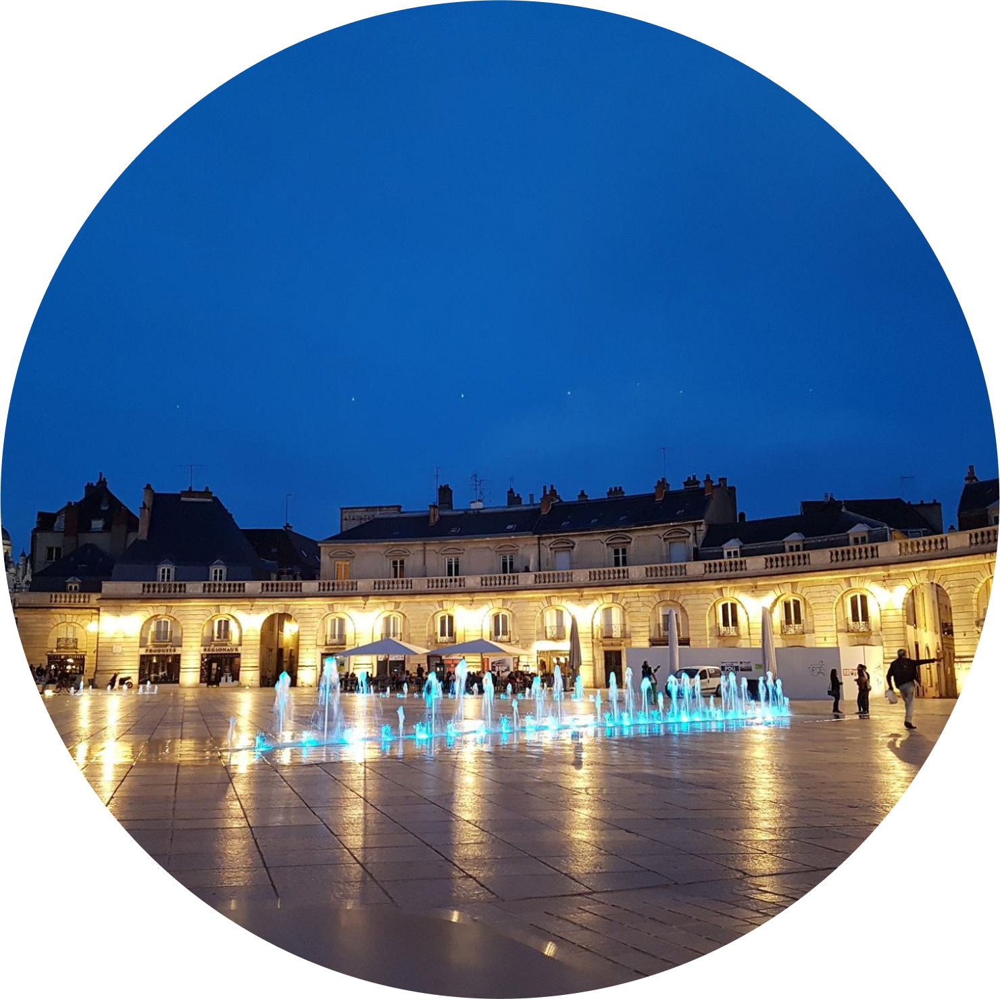

Place de la Libération
De jour et de nuit, c'est la Place de Dijon. Quelques cafés et restaurant autour.
Visite des vignobles
Découvrez les vins du centre de la France lors de cette visite guidée.
Musée des Beaux-arts
Incroyable collection d'art et d'artefacts médiévaux datant des premiers jours de Dijon.